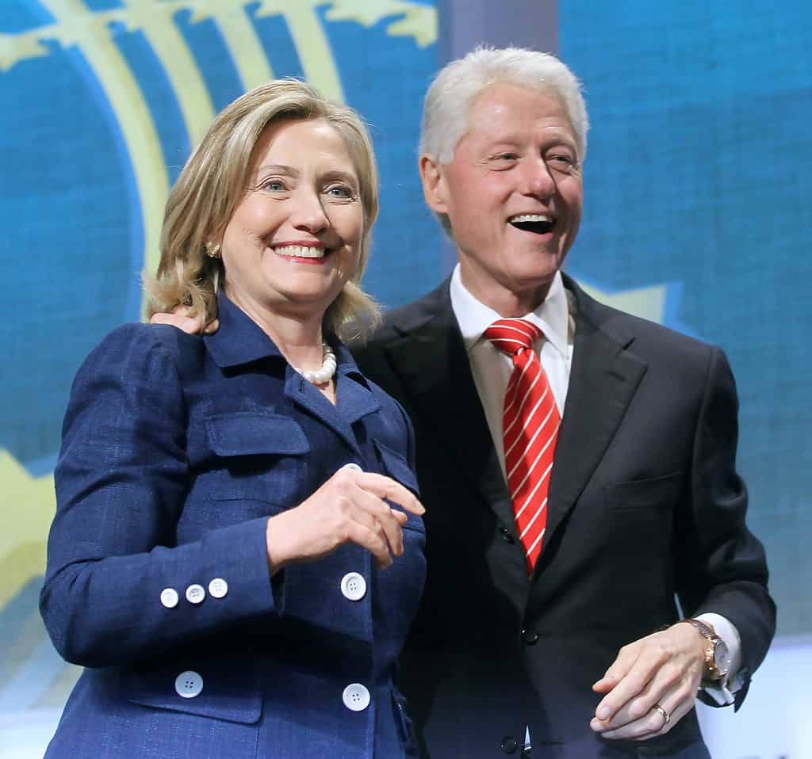

< < < Back
Why Don’t SJWs Call Bill Clinton A Rapist? – Return Of Kings
Well, I would say that everybody should be believed at first until they are disbelieved based on evidence.
— Hillary Clinton, in response to a question about whether her husband’s sexual assault and rape accusers, Juanita Broaddrick, Paula Jones and Kathleen Willey, should be believed.
In recent years, Hillary Clinton has tried to jostle her way into becoming the nation’s premier sexual assault grandstander. For this mantle she faces stiff competition, particularly in the form of perpetual due process haters like Senators Claire McCaskill and Kirsten Gillibrand. Clinton has told “survivors” (read: accusers) of sexual assault that they have “the right to be believed.” Apparently, though, this right does not extend to those who have previously alleged that her husband Bill sexually harassed or raped them.
Hillary was asked after a recent address whether Bill Clinton accusers Juanita Broaddrick, Paula Jones and Kathleen Willey should be believed. She responded that women should be believed initially and provided they are not “disbelieved based on evidence.” She then laughed broadly, without stipulating how exactly the allegations against Bill Clinton had been disproven, especially since her husband paid Paula Jones $850,000 in the 1990s to stop pursuing her sexual harassment claim. Ironically, Clinton’s answer came within days of literally thousands of people declaring James Deen a rapist due to tweets and other social media posts.
Cranking up the feminist rhetoric in the lead-up to her 2016 Presidential run, Hillary has attached herself to everything both rape-related and leftwing, from the Mattress Girl debacle to the fabricated 1-in-5 campus sexual assault statistic. The media will happily try to fact-check Donald Trump on matters like New Jersey Muslims allegedly celebrating the 9/11 attacks, but patently fails to give the same attention to a woman who calls for guilty until proven innocent for every man accused of rape, bar her husband.
Why doesn’t the powerful man, vulnerable woman thesis ever apply to Bill Clinton?

If there’s any reason to “disbelieve” Paula Jones and Juanita Broaddrick, and to a lesser extent Kathleen Willey, why isn’t it public knowledge? How do the Clintons benefit from ambiguity?
We constantly hear about how powerful men accused of sexual assault and/or rape, from Bill Cosby to Jian Ghomeshi, supposedly get away with it because of their position, wealth, or fame. Conversely, one is supposed to believe that Bill Clinton’s accusers have fallen away because he is actually innocent. So, in other words, an African-American sitcom star with chronic arthritis is powerful enough to act with impunity for years but the President of the United States wasn’t able to potentially suppress or force his way out of rape allegations?
Clinton’s social and political capital as the most powerful man of the 1990s more than eclipsed any financial or celebrity clout possessed by a middle-aged and then decrepit Bill Cosby. Even when we look at the least credible Clinton accuser, Kathleen Willey, who said Bill fondled her in 1993, it is easy to see her as a “non-perfect victim” in feminist parlance.
Coming up against the most formidable leader in the world, can we really expect she would hold her story together? Remember, Jackie Coakley and Emma Sulkowicz are forgiven by SJWs for massive delays in accusing and blatant changes in their stories, and this is when their falsely accused targets are mere students.
The power game, not justice, is what Hillary Clinton wants

Imagine the outcry if Bill Cosby paid one of his accusers $850,000 to shut up, as Bill Clinton did to placate Paula Jones.
As a well-known lawyer, Hillary Clinton defended a man accused of child rape and she was recorded laughing about the trial later. Then, when she was even older and her husband was campaigning for President, she labeled sexual harassment and rape allegations against her husband as “bimbo eruptions”. Purported slut-shaming and other attempts to undermine women were part of Hillary’s own political toolkit well before she started excoriating so-called misogynists for doing exactly the same thing.
Fundamentally, her desire for rape convictions by social media is designed to win her the crucial backing of the rabid SJWs so accustomed to stealing both the media’s spotlight and bias. Her husband, who has a history of lying about extramarital affairs outside the other criminal accusations, will conveniently have his alleged rape antecedence brushed aside. Meanwhile, men without Bill’s history of overall deceit, including Paul Nungesser, will continue to be crucified in print, on television and online as “rapists”.
Expect the worst when Hillary is elected

A small glimpse of how Hillary will act as President.
For the record, I do not believe Bill Clinton harassed, raped, or sexually assaulted any of these women. If I did, it still wouldn’t remove the onus on his accusers and the state to secure any convictions via the courts. One can only sigh at how Bill Clinton is excused from the SJW mob mentality that literally hunts down and destroys the career prospects and lives of men never found guilty by the system, from Paul Nungesser to the Duke lacrosse team.
We live in a surreal world where the characters of powerless male students are impugned but the most influential members of the left will be afforded all the formal and informal protections of classical liberal jurisprudence. One can be sure that other Democratic political figures have been privately accused of sexual assault or rape but managed to stifle the voices of their accusers.
Is it just me or is the end of 2016 and the likely ascension of Hillary Clinton to the White House going to mark another Brave New World for trials by public opinion?
Read More: In Praise Of Alpha Male Bill Clinton